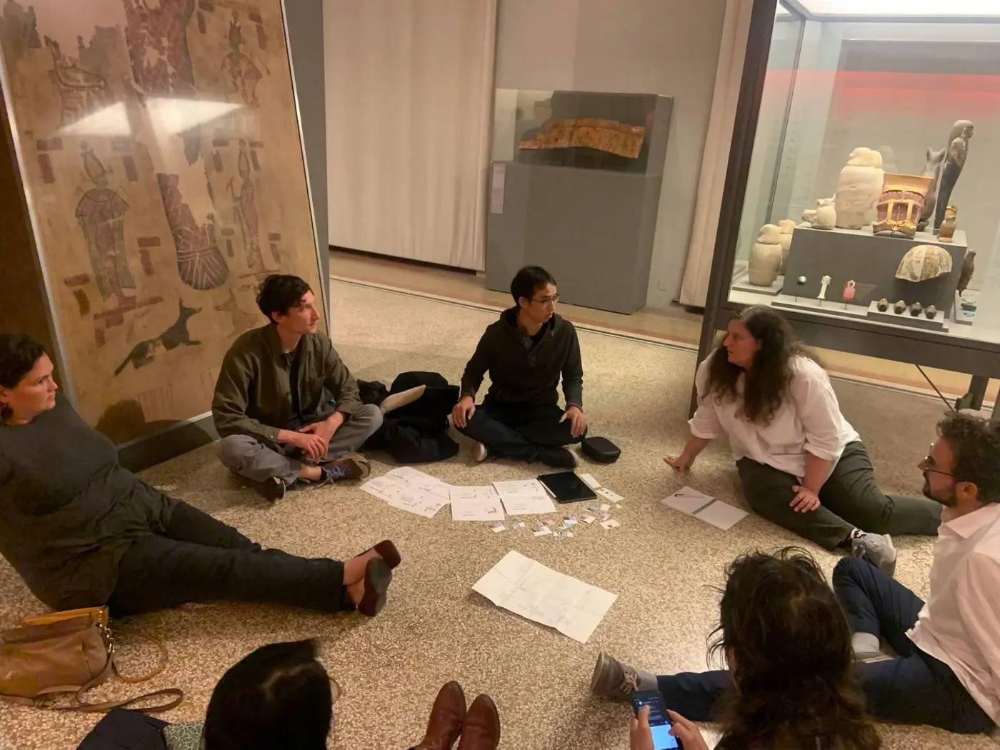
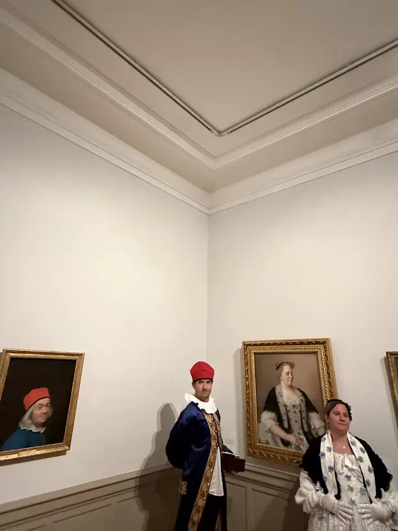
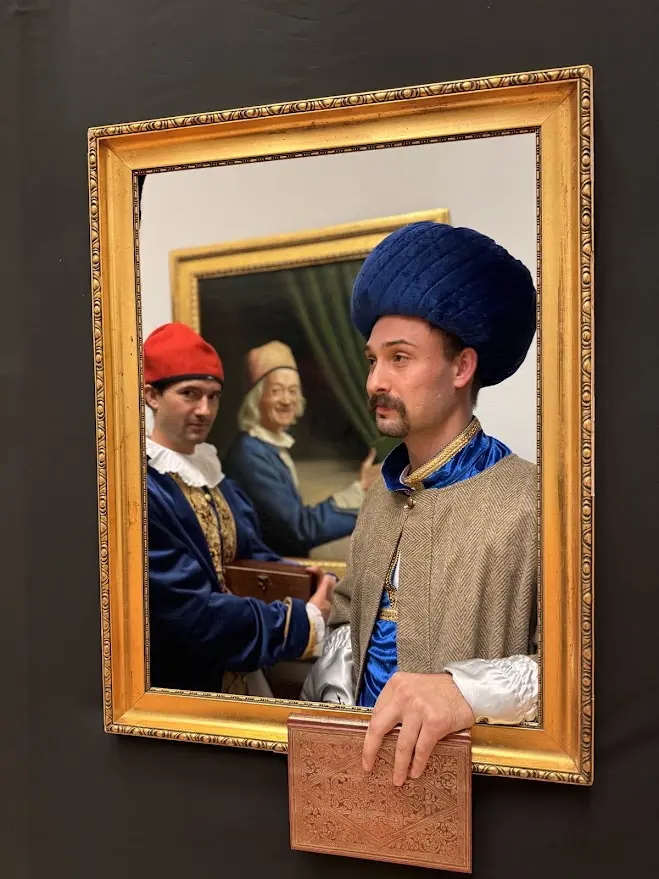

Immersive theatre · 2022
A MAH-tter of Life and Death
How do you get a general museum audience to play along, in a public space, for 90 minutes? An original murder mystery in the Egyptian wing of Geneva’s Musée d’Art et d’Histoire.
- Role
- Created, written, directed and produced
- Context
- Fête du Théâtre, with the MAH and The Murderet improv troupe
- Team
- 7 cast, 3 group leaders in character, 5 helpers guiding guests, all volunteers
- Timeline
- About five months, from first ideas in May to the show in October

The brief
The museum had hosted a few Cluedo-style evenings before. For the 2022 Fête du Théâtre, it wanted something that would bring in a different audience, particularly young international adults, and show them the permanent collection in an unexpected way, in its Egyptian archaeology wing. We proposed something more ambitious: turn that wing into a living mystery.
Our mission statement:
I want the audience to (re)discover the museum in a fun way, while discovering a new medium: immersive theatre.
The real design problem: participation
There is no stage in immersive theatre. The audience shares the space with the actors, and that changes everything. For many guests it would be a first. Some would be shy, all of them were in a public space, and every one of them needed to feel safe enough to play. At the same time, the show had to reward the adventurous without leaving quieter guests behind. So we designed levels of engagement that ran in parallel:
- Shared scenes, with the whole audience following the main story. No participation required.
- Free exploration: suspects spread across the rooms, where guests could question them and collect clues.
- Collective choices: votes that let the audience weigh in on the investigation.
The setting was an explorers’ society around 1900, somewhere between Agatha Christie and Indiana Jones. The museum’s own collection became part of the story world, not just the backdrop.


How the evening ran
On arrival, guests were split into three factions, which created stakes straight away. A leader announced plans to return a sacred artefact, the crowd divided, and then a scream rang out, a body was found, and the investigation began. The suspects scattered through the galleries; guests questioned them, gathered clues and voted on the murder weapon. Finally, everyone came back together for the verdict, followed by flashback scenes reconstructing the crime, and a clear transition out of the fiction.
Producing it
Beyond writing and directing, I ran the production: the proposal, the admin, scheduling and communication with the museum. As I usually do for immersive work, I planned rehearsals in two strands: the fixed, scripted moments on one side, the interactive parts on the other. I also cast it: first from The Murderet’s members, then beyond the troupe. The cast mixed improvisers with actors used to fixed scripts, two very different ways of working. With everyone’s busy schedules, getting the whole team together was impossible, so I briefed people separately and remotely; the only in-person briefing could happen on the day of the playtest, when there was already a lot to juggle. Once roles were clear, the cast took real ownership, and said it felt better to perform.

What I learned
From our debrief, the lessons I’ve carried into every project since:
- Set the frame early. Agree on a clear skeleton, with milestones and what we do and don’t want to make, then improvise within it.
- Playtest early, and more than once. Our single playtest, the day before, was the most useful moment of the whole process. It just came too late.
- Balance the tone. A murder mystery should entertain, not weigh heavy: playful fictional characters, with real stakes underneath.
- Check the space, not just the script. The courtyard and upper floor were hard to hear in.
- Agree on roles with every partner before starting.
The costumes, which made the whole cast feel like one world, were among the things that worked best. A more resourced version, with sound, lighting, set design and ticketed runs, is still something I’d love to build.
Back at the museum, 2026
Liotard Awakens was an after-work evening of talking portraits: five actors, four of them framed as Liotard’s paintings, chatting with visitors. It was led and directed by Yohann Thenaisie, with actors from The Murderet and a full creative team, costumes and set included. The concept grew out of our brainstorming. This time I chose to support rather than lead: assistant concept designer, sounding board, and helping make things happen backstage. We deliberately kept the design much simpler, one of the lessons from 2022.

